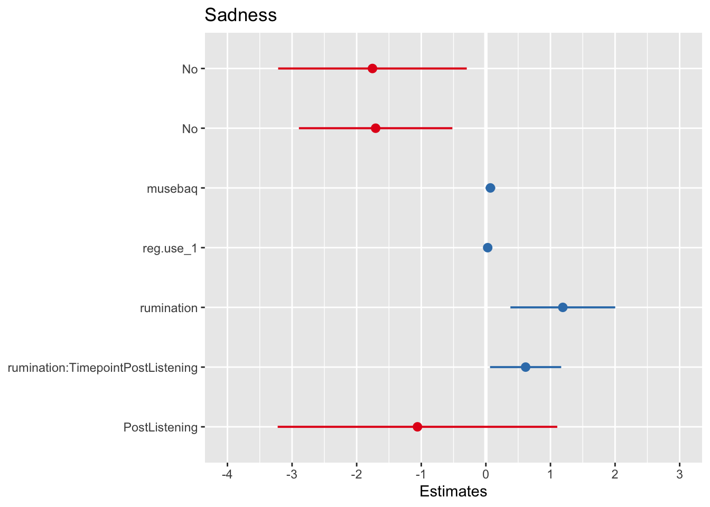
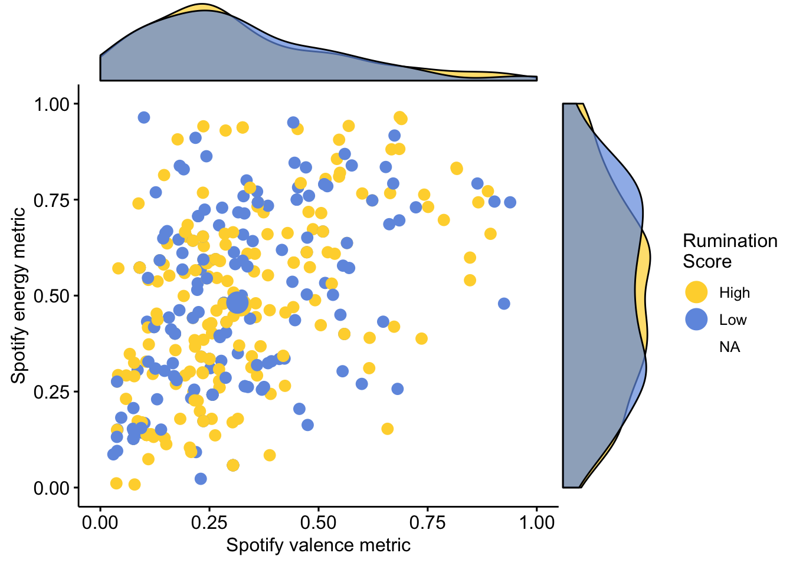

Last updated: 2019-09-25
Checks: 7 0
Knit directory: MusicEmoRegInRumination/
This reproducible R Markdown analysis was created with workflowr (version 1.4.0). The Checks tab describes the reproducibility checks that were applied when the results were created. The Past versions tab lists the development history.
Great! Since the R Markdown file has been committed to the Git repository, you know the exact version of the code that produced these results.
Great job! The global environment was empty. Objects defined in the global environment can affect the analysis in your R Markdown file in unknown ways. For reproduciblity it’s best to always run the code in an empty environment.
The command set.seed(20190920) was run prior to running the code in the R Markdown file. Setting a seed ensures that any results that rely on randomness, e.g. subsampling or permutations, are reproducible.
Great job! Recording the operating system, R version, and package versions is critical for reproducibility.
Nice! There were no cached chunks for this analysis, so you can be confident that you successfully produced the results during this run.
Great job! Using relative paths to the files within your workflowr project makes it easier to run your code on other machines.
Great! You are using Git for version control. Tracking code development and connecting the code version to the results is critical for reproducibility. The version displayed above was the version of the Git repository at the time these results were generated.
Note that you need to be careful to ensure that all relevant files for the analysis have been committed to Git prior to generating the results (you can use wflow_publish or wflow_git_commit). workflowr only checks the R Markdown file, but you know if there are other scripts or data files that it depends on. Below is the status of the Git repository when the results were generated:
Ignored files:
Ignored: .DS_Store
Ignored: .Rproj.user/
Untracked files:
Untracked: docs/s1MARScor.txt
Unstaged changes:
Modified: analysis/_site.yml
Modified: data/s2Processed.csv
Note that any generated files, e.g. HTML, png, CSS, etc., are not included in this status report because it is ok for generated content to have uncommitted changes.
These are the previous versions of the R Markdown and HTML files. If you’ve configured a remote Git repository (see ?wflow_git_remote), click on the hyperlinks in the table below to view them.
| File | Version | Author | Date | Message |
|---|---|---|---|---|
| html | d153258 | Joel Larwood | 2019-09-25 | Build site. |
| html | 2e25e9c | Joel Larwood | 2019-09-25 | Build site. |
| Rmd | dedd590 | Joel Larwood | 2019-09-25 | Publish to study 2 explore |
| Rmd | a80c083 | Joel Larwood | 2019-09-24 | continued exploratory analyses |
| Rmd | cd4829d | Joel Larwood | 2019-09-23 | build control model |
| html | cd4829d | Joel Larwood | 2019-09-23 | build control model |
In the dataset we also collected data about the BRECVEMA mechanism occuring during listening, demogrpahics and how likely they were to use the song for regulation.
library(tidyverse)── Attaching packages ─────────────────────────────────────────── tidyverse 1.2.1 ──✔ ggplot2 3.2.0 ✔ purrr 0.3.2
✔ tibble 2.1.3 ✔ dplyr 0.8.3
✔ tidyr 0.8.3 ✔ stringr 1.4.0
✔ readr 1.3.1 ✔ forcats 0.4.0── Conflicts ────────────────────────────────────────────── tidyverse_conflicts() ──
✖ dplyr::filter() masks stats::filter()
✖ dplyr::lag() masks stats::lag()s2longExplore <- read_csv("data/s2long.csv") %>%
dplyr::select(id,
Sadness,
Timepoint,
rumination,
Baseline,
age,
gender,
contains("mec"),
musebaq,
reg.use_1,
valence,
energy) %>%
drop_na() %>%
mutate_at(.vars = vars(mecscale_1:mecscale_8),
factor) %>%
mutate_at(.vars = vars (mecscale_1:mecscale_8),
.funs = forcats::fct_recode,
"Yes" = "1",
"No" = "2")Parsed with column specification:
cols(
.default = col_double(),
ProlificID = col_character(),
track_name = col_character(),
sad.song = col_character(),
artist_name = col_character(),
sad.song.artist = col_character(),
StartDate = col_character(),
EndDate = col_character(),
IPAddress = col_character(),
RecordedDate = col_character(),
ResponseId = col_character(),
RecipientLastName = col_character(),
RecipientFirstName = col_character(),
RecipientEmail = col_character(),
ExternalReference = col_character(),
LocationLatitude = col_character(),
LocationLongitude = col_character(),
DistributionChannel = col_character(),
UserLanguage = col_character(),
gender = col_character(),
track_uri = col_character()
# ... with 10 more columns
)See spec(...) for full column specifications.So I want to build some models with control mechanisms coming in at each point
Model 1 is the timepoint only model
library(sjPlot)Learn more about sjPlot with 'browseVignettes("sjPlot")'.timepoint <- lmerTest::lmer(Sadness~1 + Timepoint + (1 |id), data = s2longExplore)
tab_model(timepoint)| Sadness | |||
|---|---|---|---|
| Predictors | Estimates | CI | p |
| (Intercept) | 12.47 | 11.89 – 13.05 | <0.001 |
| PostListening | 1.32 | 0.94 – 1.71 | <0.001 |
| Random Effects | |||
| σ2 | 6.66 | ||
| τ00 id | 23.71 | ||
| ICC | 0.78 | ||
| N id | 348 | ||
| Observations | 696 | ||
| Marginal R2 / Conditional R2 | 0.014 / 0.784 | ||
Model 2 I add demographics
demo <- lmerTest::lmer(Sadness~1 + Timepoint + age + gender + (1 |id), data = s2longExplore)
tab_model(demo)| Sadness | |||
|---|---|---|---|
| Predictors | Estimates | CI | p |
| (Intercept) | 16.27 | 10.99 – 21.55 | <0.001 |
| PostListening | 1.32 | 0.94 – 1.71 | <0.001 |
| age | -0.17 | -0.41 – 0.07 | 0.161 |
| Male | -0.17 | -1.27 – 0.94 | 0.769 |
| Non-Binary/Not Disclosed | 0.72 | -5.22 – 6.66 | 0.813 |
| Random Effects | |||
| σ2 | 6.66 | ||
| τ00 id | 23.77 | ||
| ICC | 0.78 | ||
| N id | 348 | ||
| Observations | 696 | ||
| Marginal R2 / Conditional R2 | 0.019 / 0.785 | ||
Model 3 I add spotify data
spotifyvar <- lmerTest::lmer(Sadness~1 + Timepoint + age + gender + valence + energy + (1 |id), data = s2longExplore)
tab_model(spotifyvar)| Sadness | |||
|---|---|---|---|
| Predictors | Estimates | CI | p |
| (Intercept) | 16.48 | 11.00 – 21.95 | <0.001 |
| PostListening | 1.32 | 0.94 – 1.71 | <0.001 |
| age | -0.18 | -0.42 – 0.06 | 0.152 |
| Male | -0.14 | -1.26 – 0.97 | 0.804 |
| Non-Binary/Not Disclosed | 0.75 | -5.22 – 6.72 | 0.806 |
| valence | 0.54 | -2.64 – 3.72 | 0.739 |
| energy | -0.58 | -3.24 – 2.07 | 0.667 |
| Random Effects | |||
| σ2 | 6.66 | ||
| τ00 id | 23.92 | ||
| ICC | 0.78 | ||
| N id | 348 | ||
| Observations | 696 | ||
| Marginal R2 / Conditional R2 | 0.020 / 0.786 | ||
model 4 I add the brecvema mechanisms
mecscale <- lmerTest::lmer(Sadness~1 + Timepoint + age + gender + valence + energy + mecscale_1 + mecscale_2 + mecscale_3 + mecscale_4 + mecscale_5 + mecscale_6 + mecscale_7 + mecscale_8 + (1 |id), data = s2longExplore)
tab_model(mecscale)| Sadness | |||
|---|---|---|---|
| Predictors | Estimates | CI | p |
| (Intercept) | 22.28 | 16.52 – 28.03 | <0.001 |
| PostListening | 1.32 | 0.94 – 1.71 | <0.001 |
| age | -0.16 | -0.40 – 0.07 | 0.177 |
| Male | -0.39 | -1.48 – 0.70 | 0.480 |
| Non-Binary/Not Disclosed | 2.77 | -3.12 – 8.65 | 0.357 |
| valence | 0.20 | -2.91 – 3.31 | 0.899 |
| energy | -2.46 | -5.16 – 0.25 | 0.076 |
| No | -1.57 | -2.83 – -0.30 | 0.016 |
| No | -0.97 | -2.39 – 0.44 | 0.179 |
| No | -1.63 | -2.83 – -0.42 | 0.009 |
| No | -0.04 | -1.30 – 1.22 | 0.951 |
| No | -0.27 | -1.60 – 1.07 | 0.698 |
| No | -0.43 | -2.53 – 1.68 | 0.693 |
| No | -1.22 | -2.94 – 0.51 | 0.168 |
| No | -2.24 | -3.80 – -0.67 | 0.005 |
| Random Effects | |||
| σ2 | 6.66 | ||
| τ00 id | 22.03 | ||
| ICC | 0.77 | ||
| N id | 348 | ||
| Observations | 696 | ||
| Marginal R2 / Conditional R2 | 0.096 / 0.790 | ||
model 5 I add how likely they are to listen to the song when they are sad
likelyuse <- lmerTest::lmer(Sadness~1 + Timepoint + age + gender + valence + energy + mecscale_1 + mecscale_2 + mecscale_3 + mecscale_4 + mecscale_5 + mecscale_6 + mecscale_7 + mecscale_8 + reg.use_1 + (1 |id), data = s2longExplore)
tab_model (likelyuse)| Sadness | |||
|---|---|---|---|
| Predictors | Estimates | CI | p |
| (Intercept) | 17.66 | 11.56 – 23.75 | <0.001 |
| PostListening | 1.32 | 0.94 – 1.71 | <0.001 |
| age | -0.09 | -0.32 – 0.14 | 0.452 |
| Male | -0.37 | -1.44 – 0.70 | 0.501 |
| Non-Binary/Not Disclosed | 2.53 | -3.23 – 8.29 | 0.390 |
| valence | 0.57 | -2.48 – 3.62 | 0.716 |
| energy | -1.98 | -4.64 – 0.68 | 0.146 |
| No | -1.74 | -2.98 – -0.49 | 0.007 |
| No | -0.87 | -2.26 – 0.52 | 0.220 |
| No | -1.26 | -2.46 – -0.07 | 0.039 |
| No | 0.26 | -0.99 – 1.51 | 0.683 |
| No | -0.24 | -1.55 – 1.07 | 0.716 |
| No | 0.14 | -1.95 – 2.22 | 0.897 |
| No | -1.17 | -2.86 – 0.51 | 0.174 |
| No | -1.85 | -3.40 – -0.30 | 0.020 |
| reg.use_1 | 0.04 | 0.02 – 0.06 | <0.001 |
| Random Effects | |||
| σ2 | 6.66 | ||
| τ00 id | 21.00 | ||
| ICC | 0.76 | ||
| N id | 348 | ||
| Observations | 696 | ||
| Marginal R2 / Conditional R2 | 0.130 / 0.790 | ||
model 6 I add the MUSEBAQ
musebaqglmm <- lmerTest::lmer(Sadness~1 + Timepoint + age + gender + valence + energy + mecscale_1 + mecscale_2 + mecscale_3 + mecscale_4 + mecscale_5 + mecscale_6 + mecscale_7 + mecscale_8 + reg.use_1 + musebaq + (1 |id), data = s2longExplore)
tab_model(musebaqglmm)| Sadness | |||
|---|---|---|---|
| Predictors | Estimates | CI | p |
| (Intercept) | 14.83 | 8.37 – 21.28 | <0.001 |
| PostListening | 1.32 | 0.94 – 1.71 | <0.001 |
| age | -0.10 | -0.33 – 0.13 | 0.390 |
| Male | -0.36 | -1.42 – 0.70 | 0.505 |
| Non-Binary/Not Disclosed | 1.83 | -3.92 – 7.58 | 0.533 |
| valence | 0.57 | -2.45 – 3.60 | 0.710 |
| energy | -1.65 | -4.31 – 1.00 | 0.223 |
| No | -1.66 | -2.89 – -0.42 | 0.009 |
| No | -0.73 | -2.12 – 0.65 | 0.298 |
| No | -0.97 | -2.17 – 0.24 | 0.118 |
| No | 0.36 | -0.88 – 1.60 | 0.571 |
| No | -0.25 | -1.54 – 1.05 | 0.712 |
| No | 0.34 | -1.74 – 2.41 | 0.750 |
| No | -1.20 | -2.87 – 0.48 | 0.163 |
| No | -1.65 | -3.19 – -0.10 | 0.037 |
| reg.use_1 | 0.03 | 0.01 – 0.05 | 0.007 |
| musebaq | 0.10 | 0.02 – 0.17 | 0.014 |
| Random Effects | |||
| σ2 | 6.66 | ||
| τ00 id | 20.63 | ||
| ICC | 0.76 | ||
| N id | 348 | ||
| Observations | 696 | ||
| Marginal R2 / Conditional R2 | 0.143 / 0.791 | ||
model 7 I add rumiation
ruminationmain <- lmerTest::lmer(Sadness~1 + Timepoint + age + gender + valence + energy + mecscale_1 + mecscale_2 + mecscale_3 + mecscale_4 + mecscale_5 + mecscale_6 + mecscale_7 + mecscale_8 + reg.use_1 + musebaq + rumination + (1 |id), data = s2longExplore)
tab_model(ruminationmain)| Sadness | |||
|---|---|---|---|
| Predictors | Estimates | CI | p |
| (Intercept) | 10.00 | 3.19 – 16.82 | 0.004 |
| PostListening | 1.32 | 0.94 – 1.71 | <0.001 |
| age | -0.10 | -0.33 – 0.13 | 0.388 |
| Male | 0.00 | -1.05 – 1.06 | 0.995 |
| Non-Binary/Not Disclosed | 2.67 | -2.99 – 8.32 | 0.356 |
| valence | 0.28 | -2.70 – 3.25 | 0.855 |
| energy | -1.61 | -4.22 – 0.99 | 0.226 |
| No | -1.54 | -2.76 – -0.33 | 0.013 |
| No | -0.66 | -2.02 – 0.69 | 0.340 |
| No | -0.82 | -2.01 – 0.37 | 0.176 |
| No | 0.50 | -0.72 – 1.72 | 0.425 |
| No | -0.27 | -1.55 – 1.00 | 0.676 |
| No | 0.58 | -1.46 – 2.61 | 0.580 |
| No | -1.17 | -2.81 – 0.48 | 0.165 |
| No | -1.74 | -3.25 – -0.22 | 0.025 |
| reg.use_1 | 0.03 | 0.01 – 0.05 | 0.007 |
| musebaq | 0.06 | -0.02 – 0.14 | 0.139 |
| rumination | 1.50 | 0.72 – 2.29 | <0.001 |
| Random Effects | |||
| σ2 | 6.66 | ||
| τ00 id | 19.73 | ||
| ICC | 0.75 | ||
| N id | 348 | ||
| Observations | 696 | ||
| Marginal R2 / Conditional R2 | 0.172 / 0.791 | ||
Finally I add the interaction term
ruminationint <- lmerTest::lmer(Sadness~1 + Timepoint + age + gender + valence + energy + mecscale_1 + mecscale_2 + mecscale_3 + mecscale_4 + mecscale_5 + mecscale_6 + mecscale_7 + mecscale_8 + reg.use_1 + musebaq +rumination + rumination:Timepoint + (1 |id), data = s2longExplore)
tab_model(ruminationint)| Sadness | |||
|---|---|---|---|
| Predictors | Estimates | CI | p |
| (Intercept) | 11.19 | 4.29 – 18.09 | 0.002 |
| PostListening | -1.06 | -3.22 – 1.11 | 0.338 |
| age | -0.10 | -0.33 – 0.13 | 0.388 |
| Male | 0.00 | -1.05 – 1.06 | 0.995 |
| Non-Binary/Not Disclosed | 2.67 | -2.99 – 8.32 | 0.356 |
| valence | 0.28 | -2.70 – 3.25 | 0.855 |
| energy | -1.61 | -4.22 – 0.99 | 0.226 |
| No | -1.54 | -2.76 – -0.33 | 0.013 |
| No | -0.66 | -2.02 – 0.69 | 0.340 |
| No | -0.82 | -2.01 – 0.37 | 0.176 |
| No | 0.50 | -0.72 – 1.72 | 0.425 |
| No | -0.27 | -1.55 – 1.00 | 0.676 |
| No | 0.58 | -1.46 – 2.61 | 0.580 |
| No | -1.17 | -2.81 – 0.48 | 0.165 |
| No | -1.74 | -3.25 – -0.22 | 0.025 |
| reg.use_1 | 0.03 | 0.01 – 0.05 | 0.007 |
| musebaq | 0.06 | -0.02 – 0.14 | 0.139 |
| rumination | 1.20 | 0.36 – 2.03 | 0.005 |
| TimepointPostListening:rumination | 0.62 | 0.06 – 1.17 | 0.029 |
| Random Effects | |||
| σ2 | 6.59 | ||
| τ00 id | 19.76 | ||
| ICC | 0.75 | ||
| N id | 348 | ||
| Observations | 696 | ||
| Marginal R2 / Conditional R2 | 0.173 / 0.793 | ||
Now I want to compare these models
knitr::kable(anova(timepoint, demo, spotifyvar, mecscale, likelyuse, musebaqglmm, ruminationmain, ruminationint))refitting model(s) with ML (instead of REML)| Df | AIC | BIC | logLik | deviance | Chisq | Chi Df | Pr(>Chisq) | |
|---|---|---|---|---|---|---|---|---|
| timepoint | 4 | 4029.809 | 4047.990 | -2010.904 | 4021.809 | NA | NA | NA |
| demo | 7 | 4033.665 | 4065.483 | -2009.833 | 4019.665 | 2.1436659 | 3 | 0.5431295 |
| spotifyvar | 9 | 4037.455 | 4078.363 | -2009.728 | 4019.455 | 0.2102401 | 2 | 0.9002165 |
| mecscale | 17 | 4020.280 | 4097.551 | -1993.140 | 3986.280 | 33.1751433 | 8 | 0.0000573 |
| likelyuse | 18 | 4006.751 | 4088.567 | -1985.375 | 3970.751 | 15.5289004 | 1 | 0.0000813 |
| musebaqglmm | 19 | 4002.440 | 4088.802 | -1982.220 | 3964.440 | 6.3106532 | 1 | 0.0120015 |
| ruminationmain | 20 | 3989.980 | 4080.887 | -1974.990 | 3949.980 | 14.4603636 | 1 | 0.0001431 |
| ruminationint | 21 | 3987.189 | 4082.641 | -1972.594 | 3945.189 | 4.7914409 | 1 | 0.0286015 |
This shows the
Now I am going to do an exploratory analysis to find the best fitting model
library(buildmer)
saturatedformula <- Sadness~1 + Timepoint + age + gender + valence + energy + mecscale_1 + mecscale_2 + mecscale_3 + mecscale_4 + mecscale_5 + mecscale_6 + mecscale_7 + mecscale_8 + reg.use_1 + musebaq +rumination + rumination:Timepoint + (1 |id)
buildmer::buildmer(formula = saturatedformula, data = s2longExplore, crit = "AIC") grouping term block score
1 <NA> 1 NA NA 1 NA
14 <NA> rumination NA NA rumination -44.0842499
13 <NA> reg.use_1 NA NA reg.use_1 -26.6103892
4 <NA> mecscale_1 NA NA mecscale_1 -16.4920548
10 <NA> mecscale_8 NA NA mecscale_8 -9.4363422
11 <NA> Timepoint NA NA Timepoint -9.5983856
101 <NA> musebaq NA NA musebaq -4.0473074
9 <NA> mecscale_7 NA NA mecscale_7 -1.2430803
5 <NA> mecscale_3 NA NA mecscale_3 -0.7296296
12 <NA> age NA NA age 0.7227618
15 <NA> energy NA NA energy 0.5597461
2 <NA> mecscale_2 NA NA mecscale_2 0.5039917
51 <NA> Timepoint:rumination NA NA Timepoint:rumination 0.7540030
21 <NA> mecscale_4 NA NA mecscale_4 0.9248747
3 <NA> mecscale_6 NA NA mecscale_6 1.3481773
22 <NA> mecscale_5 NA NA mecscale_5 1.4876967
23 <NA> valence NA NA valence 1.9192190
16 <NA> gender NA NA gender 2.4284837
17 id 1 NA id 1 -280.9850613
AIC Iteration
1 NA 1
14 NA 1
13 -5.64866584 1
4 -4.43767183 1
10 -3.27175267 1
11 NA 1
101 -0.29960994 1
9 -0.03410082 1
5 0.07268851 1
12 1.21428573 1
15 0.45894516 1
2 1.03995224 1
51 -2.79144091 1
21 1.32965656 1
3 1.67781521 1
22 1.81624096 1
23 1.96503919 1
16 3.09701255 1
17 -280.98506132 1
grouping term block score
1 <NA> 1 NA NA 1 NA
14 <NA> rumination NA NA rumination -44.0842499
13 <NA> reg.use_1 NA NA reg.use_1 -26.6103892
4 <NA> mecscale_1 NA NA mecscale_1 -16.4920548
10 <NA> mecscale_8 NA NA mecscale_8 -9.4363422
11 <NA> Timepoint NA NA Timepoint -9.5983856
101 <NA> musebaq NA NA musebaq -4.0473074
9 <NA> mecscale_7 NA NA mecscale_7 -1.2430803
5 <NA> mecscale_3 NA NA mecscale_3 -0.7296296
12 <NA> age NA NA age 0.7227618
15 <NA> energy NA NA energy 0.5597461
2 <NA> mecscale_2 NA NA mecscale_2 0.5039917
51 <NA> Timepoint:rumination NA NA Timepoint:rumination 0.7540030
21 <NA> mecscale_4 NA NA mecscale_4 0.9248747
3 <NA> mecscale_6 NA NA mecscale_6 1.3481773
22 <NA> mecscale_5 NA NA mecscale_5 1.4876967
23 <NA> valence NA NA valence 1.9192190
17 id 1 NA id 1 -280.9850613
AIC Iteration
1 NA 2
14 NA 2
13 -5.55462273 2
4 -4.22958665 2
10 -3.02132117 2
11 NA 2
101 -0.65773528 2
9 0.02322607 2
5 0.41057141 2
12 1.19382012 2
15 0.59988044 2
2 0.95577209 2
51 -2.79144091 2
21 1.37200473 2
3 1.55702522 2
22 1.73199090 2
23 1.95359173 2
17 -280.50455659 2
grouping term block score
1 <NA> 1 NA NA 1 NA
14 <NA> rumination NA NA rumination -44.0842499
13 <NA> reg.use_1 NA NA reg.use_1 -26.6103892
4 <NA> mecscale_1 NA NA mecscale_1 -16.4920548
10 <NA> mecscale_8 NA NA mecscale_8 -9.4363422
11 <NA> Timepoint NA NA Timepoint -9.5983856
101 <NA> musebaq NA NA musebaq -4.0473074
9 <NA> mecscale_7 NA NA mecscale_7 -1.2430803
5 <NA> mecscale_3 NA NA mecscale_3 -0.7296296
12 <NA> age NA NA age 0.7227618
15 <NA> energy NA NA energy 0.5597461
2 <NA> mecscale_2 NA NA mecscale_2 0.5039917
51 <NA> Timepoint:rumination NA NA Timepoint:rumination 0.7540030
21 <NA> mecscale_4 NA NA mecscale_4 0.9248747
3 <NA> mecscale_6 NA NA mecscale_6 1.3481773
22 <NA> mecscale_5 NA NA mecscale_5 1.4876967
17 id 1 NA id 1 -280.9850613
AIC Iteration
1 NA 3
14 NA 3
13 -5.51167024 3
4 -4.24398472 3
10 -3.04619037 3
11 NA 3
101 -0.64828615 3
9 -0.02725521 3
5 0.43362436 3
12 1.21182157 3
15 0.54584703 3
2 0.94572818 3
51 -2.79144091 3
21 1.34060625 3
3 1.52839785 3
22 1.70570320 3
17 -279.96611593 3
grouping term block score
1 <NA> 1 NA NA 1 NA
14 <NA> rumination NA NA rumination -44.0842499
13 <NA> reg.use_1 NA NA reg.use_1 -26.6103892
4 <NA> mecscale_1 NA NA mecscale_1 -16.4920548
10 <NA> mecscale_8 NA NA mecscale_8 -9.4363422
11 <NA> Timepoint NA NA Timepoint -9.5983856
101 <NA> musebaq NA NA musebaq -4.0473074
9 <NA> mecscale_7 NA NA mecscale_7 -1.2430803
5 <NA> mecscale_3 NA NA mecscale_3 -0.7296296
12 <NA> age NA NA age 0.7227618
15 <NA> energy NA NA energy 0.5597461
2 <NA> mecscale_2 NA NA mecscale_2 0.5039917
51 <NA> Timepoint:rumination NA NA Timepoint:rumination 0.7540030
21 <NA> mecscale_4 NA NA mecscale_4 0.9248747
3 <NA> mecscale_6 NA NA mecscale_6 1.3481773
17 id 1 NA id 1 -280.9850613
AIC Iteration
1 NA 4
14 NA 4
13 -5.50887009 4
4 -4.33377471 4
10 -3.27505623 4
11 NA 4
101 -0.66716885 4
9 -0.05072485 4
5 0.14048561 4
12 1.28603927 4
15 0.57403391 4
2 1.00599371 4
51 -2.79144091 4
21 1.43110933 4
3 1.62560174 4
17 -279.61275799 4
grouping term block score
1 <NA> 1 NA NA 1 NA
14 <NA> rumination NA NA rumination -44.0842499
13 <NA> reg.use_1 NA NA reg.use_1 -26.6103892
4 <NA> mecscale_1 NA NA mecscale_1 -16.4920548
10 <NA> mecscale_8 NA NA mecscale_8 -9.4363422
11 <NA> Timepoint NA NA Timepoint -9.5983856
101 <NA> musebaq NA NA musebaq -4.0473074
9 <NA> mecscale_7 NA NA mecscale_7 -1.2430803
5 <NA> mecscale_3 NA NA mecscale_3 -0.7296296
12 <NA> age NA NA age 0.7227618
15 <NA> energy NA NA energy 0.5597461
2 <NA> mecscale_2 NA NA mecscale_2 0.5039917
51 <NA> Timepoint:rumination NA NA Timepoint:rumination 0.7540030
21 <NA> mecscale_4 NA NA mecscale_4 0.9248747
17 id 1 NA id 1 -280.9850613
AIC Iteration
1 NA 5
14 NA 5
13 -5.2377114 5
4 -4.2968426 5
10 -3.2319606 5
11 NA 5
101 -0.5693363 5
9 0.1052707 5
5 0.1044023 5
12 1.2200994 5
15 0.7441367 5
2 1.0900015 5
51 -2.7914409 5
21 1.3825763 5
17 -279.3200711 5
grouping term block score
1 <NA> 1 NA NA 1 NA
14 <NA> rumination NA NA rumination -44.0842499
13 <NA> reg.use_1 NA NA reg.use_1 -26.6103892
4 <NA> mecscale_1 NA NA mecscale_1 -16.4920548
10 <NA> mecscale_8 NA NA mecscale_8 -9.4363422
11 <NA> Timepoint NA NA Timepoint -9.5983856
101 <NA> musebaq NA NA musebaq -4.0473074
9 <NA> mecscale_7 NA NA mecscale_7 -1.2430803
5 <NA> mecscale_3 NA NA mecscale_3 -0.7296296
12 <NA> age NA NA age 0.7227618
15 <NA> energy NA NA energy 0.5597461
2 <NA> mecscale_2 NA NA mecscale_2 0.5039917
51 <NA> Timepoint:rumination NA NA Timepoint:rumination 0.7540030
17 id 1 NA id 1 -280.9850613
AIC Iteration
1 NA 6
14 NA 6
13 -4.8875599 6
4 -4.5649391 6
10 -3.0620212 6
11 NA 6
101 -0.4266337 6
9 0.1005930 6
5 -0.2776541 6
12 1.2466645 6
15 0.7946403 6
2 1.1395696 6
51 -2.7914409 6
17 -279.2086679 6
grouping term block score
1 <NA> 1 NA NA 1 NA
14 <NA> rumination NA NA rumination -44.0842499
13 <NA> reg.use_1 NA NA reg.use_1 -26.6103892
4 <NA> mecscale_1 NA NA mecscale_1 -16.4920548
10 <NA> mecscale_8 NA NA mecscale_8 -9.4363422
11 <NA> Timepoint NA NA Timepoint -9.5983856
101 <NA> musebaq NA NA musebaq -4.0473074
9 <NA> mecscale_7 NA NA mecscale_7 -1.2430803
5 <NA> mecscale_3 NA NA mecscale_3 -0.7296296
15 <NA> energy NA NA energy 0.5597461
2 <NA> mecscale_2 NA NA mecscale_2 0.5039917
51 <NA> Timepoint:rumination NA NA Timepoint:rumination 0.7540030
17 id 1 NA id 1 -280.9850613
AIC Iteration
1 NA 7
14 NA 7
13 -5.82378744 7
4 -4.52665614 7
10 -3.28896787 7
11 NA 7
101 -0.31408925 7
9 0.08438749 7
5 -0.08529517 7
15 0.91155136 7
2 1.03008706 7
51 -2.79144091 7
17 -279.19921486 7
grouping term block score
1 <NA> 1 NA NA 1 NA
14 <NA> rumination NA NA rumination -44.0842499
13 <NA> reg.use_1 NA NA reg.use_1 -26.6103892
4 <NA> mecscale_1 NA NA mecscale_1 -16.4920548
10 <NA> mecscale_8 NA NA mecscale_8 -9.4363422
11 <NA> Timepoint NA NA Timepoint -9.5983856
101 <NA> musebaq NA NA musebaq -4.0473074
9 <NA> mecscale_7 NA NA mecscale_7 -1.2430803
5 <NA> mecscale_3 NA NA mecscale_3 -0.7296296
15 <NA> energy NA NA energy 0.5597461
51 <NA> Timepoint:rumination NA NA Timepoint:rumination 0.7540030
17 id 1 NA id 1 -280.9850613
AIC Iteration
1 NA 8
14 NA 8
13 -5.94564466 8
4 -4.78118641 8
10 -3.75746801 8
11 NA 8
101 -0.54780063 8
9 0.10837465 8
5 0.02620235 8
15 1.30055988 8
51 -2.79144091 8
17 -279.35151636 8
grouping term block score
1 <NA> 1 NA NA 1 NA
14 <NA> rumination NA NA rumination -44.0842499
13 <NA> reg.use_1 NA NA reg.use_1 -26.6103892
4 <NA> mecscale_1 NA NA mecscale_1 -16.4920548
10 <NA> mecscale_8 NA NA mecscale_8 -9.4363422
11 <NA> Timepoint NA NA Timepoint -9.5983856
101 <NA> musebaq NA NA musebaq -4.0473074
9 <NA> mecscale_7 NA NA mecscale_7 -1.2430803
5 <NA> mecscale_3 NA NA mecscale_3 -0.7296296
51 <NA> Timepoint:rumination NA NA Timepoint:rumination 0.7540030
17 id 1 NA id 1 -280.9850613
AIC Iteration
1 NA 9
14 NA 9
13 -6.3964544 9
4 -4.5145561 9
10 -3.2244421 9
11 NA 9
101 -0.8319954 9
9 0.1391248 9
5 0.4316814 9
51 -2.7914409 9
17 -279.3047394 9
grouping term block score
1 <NA> 1 NA NA 1 NA
14 <NA> rumination NA NA rumination -44.084250
13 <NA> reg.use_1 NA NA reg.use_1 -26.610389
4 <NA> mecscale_1 NA NA mecscale_1 -16.492055
10 <NA> mecscale_8 NA NA mecscale_8 -9.436342
11 <NA> Timepoint NA NA Timepoint -9.598386
101 <NA> musebaq NA NA musebaq -4.047307
9 <NA> mecscale_7 NA NA mecscale_7 -1.243080
51 <NA> Timepoint:rumination NA NA Timepoint:rumination 0.754003
17 id 1 NA id 1 -280.985061
AIC Iteration
1 NA 10
14 NA 10
13 -6.5454093 10
4 -4.9936901 10
10 -3.6902431 10
11 NA 10
101 -1.5462580 10
9 0.1378652 10
51 -2.7914409 10
17 -279.9033965 10
grouping term block score
1 <NA> 1 NA NA 1 NA
14 <NA> rumination NA NA rumination -44.084250
13 <NA> reg.use_1 NA NA reg.use_1 -26.610389
4 <NA> mecscale_1 NA NA mecscale_1 -16.492055
10 <NA> mecscale_8 NA NA mecscale_8 -9.436342
11 <NA> Timepoint NA NA Timepoint -9.598386
101 <NA> musebaq NA NA musebaq -4.047307
51 <NA> Timepoint:rumination NA NA Timepoint:rumination 0.754003
17 id 1 NA id 1 -280.985061
AIC Iteration
1 NA 11
14 NA 11
13 -6.685745 11
4 -5.972487 11
10 -3.607174 11
11 NA 11
101 -1.468864 11
51 -2.791441 11
17 -280.722051 11Linear mixed model fit by REML ['lmerModLmerTest']
Formula: Sadness ~ 1 + rumination + reg.use_1 + mecscale_1 + mecscale_8 +
Timepoint + musebaq + rumination:Timepoint + (1 | id)
Data: s2longExplore
REML criterion at convergence: 3966.803
Random effects:
Groups Name Std.Dev.
id (Intercept) 4.421
Residual 2.567
Number of obs: 696, groups: id, 348
Fixed Effects:
(Intercept) rumination
6.70213 1.19110
reg.use_1 mecscale_1No
0.02842 -1.70624
mecscale_8No TimepointPostListening
-1.75549 -1.05855
musebaq rumination:TimepointPostListening
0.07017 0.61536 the best model was identifed as
selected <- lmerTest::lmer(Sadness ~ 1 + rumination + reg.use_1 + mecscale_1 + mecscale_8 + Timepoint + musebaq + rumination:Timepoint + (1 | id), data = s2longExplore)It returns this
tab_model(selected)| Sadness | |||
|---|---|---|---|
| Predictors | Estimates | CI | p |
| (Intercept) | 6.70 | 2.94 – 10.46 | 0.001 |
| rumination | 1.19 | 0.38 – 2.00 | 0.004 |
| reg.use_1 | 0.03 | 0.01 – 0.05 | 0.004 |
| No | -1.71 | -2.89 – -0.52 | 0.005 |
| No | -1.76 | -3.22 – -0.30 | 0.019 |
| PostListening | -1.06 | -3.22 – 1.11 | 0.338 |
| musebaq | 0.07 | -0.00 – 0.14 | 0.065 |
| rumination:TimepointPostListening | 0.62 | 0.06 – 1.17 | 0.029 |
| Random Effects | |||
| σ2 | 6.59 | ||
| τ00 id | 19.55 | ||
| ICC | 0.75 | ||
| N id | 348 | ||
| Observations | 696 | ||
| Marginal R2 / Conditional R2 | 0.161 / 0.788 | ||
plot_model(selected)
| Version | Author | Date |
|---|---|---|
| 2e25e9c | Joel Larwood | 2019-09-25 |
s2explore <- read_csv("data/s2Processed.csv") %>%
mutate(rumsplit = if_else(.$rumination < median(rumination, na.rm = TRUE),
"Low", "High"))library(ggsci)
# s2explore %>%
# ggplot2::ggplot(aes(x = valence,
# y = energy,
# fill = rumination,
# color = rumination)) +
# geom_point(size = 5, alpha = .5) +
# geom_hline(yintercept = .5) +
# geom_vline(xintercept =.5) +
# ylim(0,1) +
# xlim(0,1) +
# ggplot2::geom_point(aes(fill = rumination)) +
# ggplot2::geom_hline(yintercept = .5) +
# ggplot2::geom_vline(xintercept =.5) +
# ggplot2::ylim(0,1) +
# ggplot2::xlim(0,1) +
# ggpubr::stat_cor(label.x = .75,
# label.y = .95) +
# ggpubr::theme_pubr(legend = "right") +
# ggplot2::stat_smooth(method = "lm")
ggpubr::ggscatterhist(s2explore,
x = "valence",
y = "energy",
palette = "simpsons",
color = "rumsplit",
fill = "rumsplit",
size = 3,
legend = "right",
xlab = "Spotify valence metric",
ylab = "Spotify energy metric",
cor.coef = TRUE,
cor.coef.coord = c(.71, .9),
add = "reg.line",
conf.int = TRUE,
margin.params = list(fill = "rumsplit"),
legend.title = "Rumination \nScore",
xlim = c(0, 1),
ylim = c(0, 1),
) 
| Version | Author | Date |
|---|---|---|
| 2e25e9c | Joel Larwood | 2019-09-25 |
sessionInfo()R version 3.6.1 (2019-07-05)
Platform: x86_64-apple-darwin15.6.0 (64-bit)
Running under: macOS Mojave 10.14.6
Matrix products: default
BLAS: /Library/Frameworks/R.framework/Versions/3.6/Resources/lib/libRblas.0.dylib
LAPACK: /Library/Frameworks/R.framework/Versions/3.6/Resources/lib/libRlapack.dylib
locale:
[1] en_AU.UTF-8/en_AU.UTF-8/en_AU.UTF-8/C/en_AU.UTF-8/en_AU.UTF-8
attached base packages:
[1] stats graphics grDevices utils datasets methods base
other attached packages:
[1] ggsci_2.9 buildmer_1.2.1 sjPlot_2.7.0 forcats_0.4.0
[5] stringr_1.4.0 dplyr_0.8.3 purrr_0.3.2 readr_1.3.1
[9] tidyr_0.8.3 tibble_2.1.3 ggplot2_3.2.0 tidyverse_1.2.1
loaded via a namespace (and not attached):
[1] nlme_3.1-140 fs_1.3.1 lubridate_1.7.4
[4] RColorBrewer_1.1-2 insight_0.4.1 httr_1.4.1
[7] rprojroot_1.3-2 numDeriv_2016.8-1.1 tools_3.6.1
[10] TMB_1.7.15 backports_1.1.4 R6_2.4.0
[13] sjlabelled_1.1.0 mgcv_1.8-28 lazyeval_0.2.2
[16] colorspace_1.4-1 withr_2.1.2 tidyselect_0.2.5
[19] mnormt_1.5-5 emmeans_1.4 compiler_3.6.1
[22] git2r_0.26.1 performance_0.3.0 cli_1.1.0
[25] rvest_0.3.4 xml2_1.2.1 sandwich_2.5-1
[28] labeling_0.3 bayestestR_0.2.2 scales_1.0.0
[31] mvtnorm_1.0-11 psych_1.8.12 digest_0.6.20
[34] foreign_0.8-71 minqa_1.2.4 rmarkdown_1.14
[37] pkgconfig_2.0.2 htmltools_0.3.6 lme4_1.1-21
[40] highr_0.8 rlang_0.4.0 readxl_1.3.1
[43] rstudioapi_0.10 generics_0.0.2 zoo_1.8-6
[46] jsonlite_1.6 magrittr_1.5 Matrix_1.2-17
[49] Rcpp_1.0.2 munsell_0.5.0 stringi_1.4.3
[52] multcomp_1.4-10 whisker_0.3-2 yaml_2.2.0
[55] MASS_7.3-51.4 plyr_1.8.4 grid_3.6.1
[58] parallel_3.6.1 ggrepel_0.8.1 sjmisc_2.8.1
[61] crayon_1.3.4 lattice_0.20-38 cowplot_1.0.0
[64] ggeffects_0.11.0 haven_2.1.1 splines_3.6.1
[67] sjstats_0.17.5 hms_0.5.0 zeallot_0.1.0
[70] knitr_1.24 pillar_1.4.2 ggpubr_0.2.3
[73] boot_1.3-22 ggsignif_0.6.0 estimability_1.3
[76] codetools_0.2-16 glue_1.3.1 evaluate_0.14
[79] modelr_0.1.4 vctrs_0.2.0 nloptr_1.2.1
[82] cellranger_1.1.0 gtable_0.3.0 assertthat_0.2.1
[85] xfun_0.9 xtable_1.8-4 broom_0.5.2
[88] coda_0.19-3 survival_2.44-1.1 lmerTest_3.1-0
[91] glmmTMB_0.2.3 workflowr_1.4.0 TH.data_1.0-10